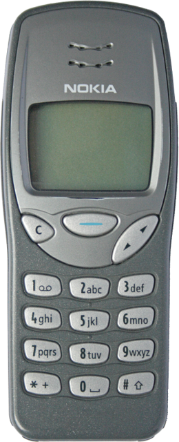

Accessibility
a brief but mostly true history
Matt May, Adobe Design
5 November 2019
In the beginning...
- 1990: TimBL invents HTML/HTTP/browser
- 1994: W3C founded
- 1995: Trace Center publishes guidelines
- 1997: Microsoft delivers MSAA
- 1997: W3C/WAI founded
WCAG 1 in a nutshell
- alt text
- no relying on color alone
- proper use of markup
- clear language
- graceful transformation / progressive enhancement
- device independence
- clear navigation / operation
WCAG 1 limitations
- very HTML-centric
- over 60 checkpoints
- not very measurable
- technology outpaced it
- first in multimedia, then in HTML itself
The world in 1999
- Reference PC display: 15” CRT, 1280 * 1024 * 24 bit
- HTML 4.01
- Browser Wars
- ECMAScript 2 (!)
- VR == VRML
Mobile devices in 1999

WCAG 2 vs. WCAG 1
very HTML-centric pretty agnostic
over 60 12 checkpoints
not very pretty measurable
- technology outpaced it (?)
Four principles of WCAG 2.0
- Perceivable
- Operable
- Understandable
- Robust
Where we are strong
- community(/ies)
- structure
- accessible (assistive) technology
Where we aren't
- space and motion (e.g. VR/AR cases)
- vestibular disorders
- environmental captioning
- new input mechanisms